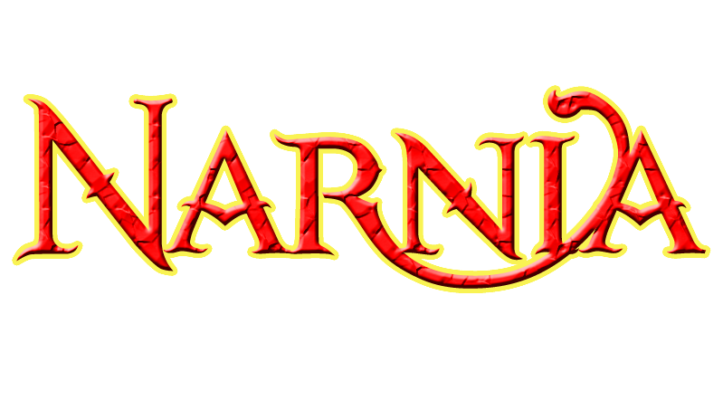
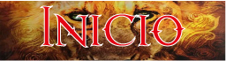
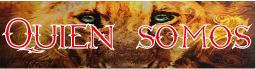
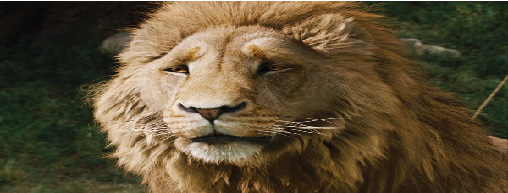
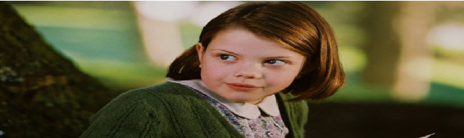
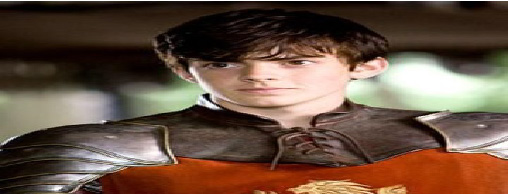

|  | ||||
|  |  | |||
|

Aslan |
Aslan es el creador de Narnia e hijo del gran emperador de Allende los mares. Su papel en Narnia se desarrolla a lo largo de toda la saga, siendo el único personaje en aparecer en todos las peliculas. Es un león parlante, rey de las bestias, hijo del Emperador de los mares del Más Allá, un sabio, compasivo, una autoridad mágica (tanto temporal y espiritual); misterioso, y es el amado guía para los niños humanos que lo visitan; guardián y salvador de Narnia y, en última instancia, creador y destructor de este mundo mágico. Durante la saga, se comenta que Aslan no es un león domado, tiene un gran poder y puede llegar a ser peligroso. | |
|

Lucy Pevensie |
Fue la primera de los cuatro hermanos en ir a Narnia; allí conoció a un fauno llamado Tumnus, que le habló de Narnia y la invitó a cenar en su casa. A Lucy le pareció que había estado horas allí, pero al volver a su propio mundo no había pasado ni un segundo. Al principio sus hermanos no creyeron su relato y hasta Edmund le hizo burla a su historia. Fue la que más quiso a Aslan y más tarde se convirtió en la Reina Lucy, la Valiente. Para ella, el ser la más pequeña no fue inconveniente para que lleve el control de la trama y de lo que sucede a su alrededor (debido a su personalidad chispeante y directa). Es la más dulce de sus hermanos y termina siendo la que más cree en Narnia. Detesta a todos los insectos, pero le encantan los animales de Narnia. | |
|

Edmund Pevensie |
Edmund es uno de los personajes principales, y el carácter que se desarrolla la mayor parte en el curso de la historia. El la saga explica que Edmund comenzó como una persona amable, pero luego se cambió para peor y comenzó a actuar mal después de asistir a una nueva escuela (aunque en 2005 la adaptación cinematográfica del libro, explica que él está disgustado porque su padre se vio obligado a servir en la guerra y que son enviados lejos del hogar | |